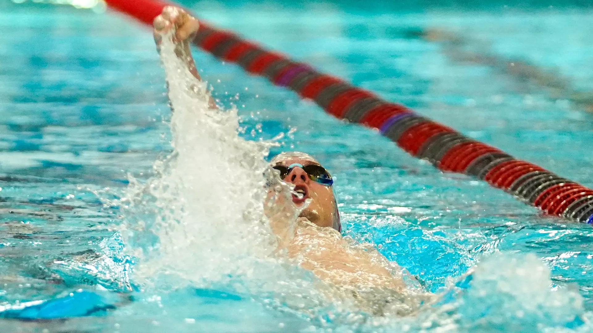

I'm Christopher Smith, a CS major at WPI. Moving forward in my coursework and independent study of Software Engineering and Systems Programming, I look forward to entering the workforce in either embedded system design, web development, or software engineering.

Outside of academics I am a varsity swimmer, successfully breaking the record for the men's 200 IM in my freshman and sophomore year. In doing so, I placed third during my first season on the swim team and won the Charles R. McNulty award. On top of that, I also enjoy playing pool. Having started the Summer before coming to WPI, I managed to win the 8-ball tournament held in the Fall just three months after starting the hobby. Although I have not been able to repeat a win yet, I was the runner up in the pool league held in Spring of 2024, losing 11-10 to my adversary. I can successfully break and run from time to time, but I still strive to consistently do so.